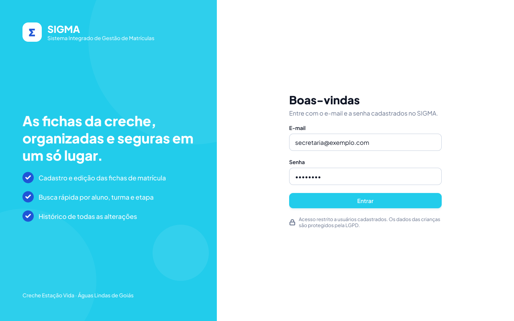
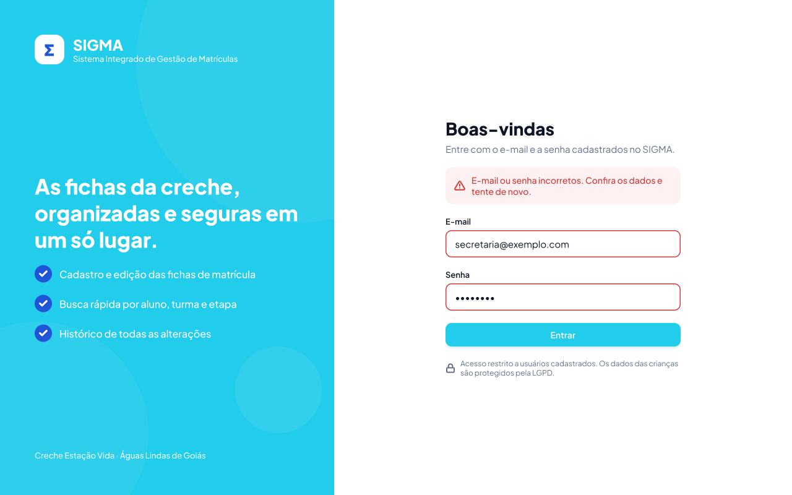

UC01 - Gerenciar Autenticar
← Voltar para o Painel de Casos de Uso • Catálogo Unificado de Requisitos
1. Atores
Atores principais: Secretária, Administrador
2. Objetivo
Permitir que as secretárias e administradores da Creche Estação Vida entrem e saiam do sistema de forma segura, garantindo que o acesso aos dados dos alunos seja restrito apenas a usuários autorizados.
3. Pré-Condições
- O ator deve possuir uma conta previamente cadastrada no sistema (e-mail e senha) por um Administrador.
- O sistema deve possuir conexão ativa com a internet e com o banco de dados.
4. Fluxo Principal
FP01 - Realizar Login com Sucesso (RF06)
- O ator acessa a página inicial do sistema SIGMA.
- O sistema exibe o formulário de autenticação solicitando as credenciais.
- O ator insere seu e-mail (nome de usuário) e sua senha.
- O ator seleciona o botão de "Entrar".
- O sistema valida as credenciais informadas no banco de dados. (FE01)
- O sistema autoriza o acesso em um tempo inferior a 2 segundos.
- O sistema redireciona o ator para o painel principal (dashboard) da aplicação.
5. Fluxos Alternativos
FA01 - Realizar Logout (RF07)
- O ator, já autenticado, clica no botão ou ícone de "Sair" (Logout) no painel do sistema.
- O sistema encerra a sessão ativa do usuário.
- O sistema redireciona o ator de volta para a tela de login.
6. Fluxos de Exceção
FE01 - Credenciais Inválidas (Senha Incorreta ou Usuário Inexistente)
- O ator insere o e-mail e a senha.
- O sistema verifica as credenciais e identifica que não há correspondência. (RNF02)
- O sistema registra a tentativa falha.
- O sistema exibe a mensagem: "E-mail ou senha incorretos."
FE02 - Tentativa de Acesso Não Autenticado
- O ator tenta acessar diretamente a URL de uma rota interna do sistema sem ter feito login prévio. (RNF02)
- O sistema identifica a ausência de uma sessão ativa válida. (RNF02)
- O sistema bloqueia o acesso à rota solicitada, retornando código HTTP 401 (Unauthorized) na API. (RNF02)
- O sistema redireciona o ator de volta para a tela de login. (RNF02)
FE03 - Falha de Conexão
- O ator insere as credenciais e tenta logar.
- O sistema tenta validar as credenciais, mas há indisponibilidade de comunicação com o servidor/banco de dados.
- O tempo de resposta ultrapassa o limite de 2 segundos. (RNF05)
- O sistema interrompe a tentativa e exibe a mensagem de erro: "Não foi possível conectar ao servidor. Tente novamente mais tarde."
FE04 - Conta Bloqueada por Tentativas Excedidas
- O ator tenta logar e falha pela 5ª vez consecutiva.
- O sistema identifica o limite de tentativas atingido. (RN16)
- O sistema bloqueia a conta temporariamente.
- O sistema exibe a mensagem: "Conta temporariamente bloqueada por excesso de tentativas. Tente novamente em 15 minutos."
FE05 - Conta Inativa
- O ator insere credenciais corretas, mas sua conta foi desativada por um administrador.
- O sistema verifica o status da conta. (RN18)
- O sistema nega o login e não cria a sessão.
- O sistema exibe a mensagem: "Acesso negado. Sua conta encontra-se inativa. Procure a administração."
7. Regras de Negócio
| ID | Regra de Negócio | Justificativa |
|---|---|---|
| RN16 | Bloqueio de acesso após 5 tentativas consecutivas de login inválidas. | Previne ataques de força bruta e protege o sistema. |
| RN17 | Encerramento de sessão após 30 minutos de inatividade. | Protege dados sensíveis em caso de abandono de terminal. |
| RN18 | Restrição de acesso aos usuário com status "Inativo" ou não cadastrados no sistema. | Garante que ex-funcionários percam acesso imediatamente. |
8. Requisitos Relacionados
| ID | Nome do Requisito | Relação com o Caso de Uso |
|---|---|---|
| RF06 | Realizar login | Funcionalidade primária de entrada no sistema com e-mail e senha. |
| RF07 | Realizar logout | Permite o encerramento seguro da sessão ativa pela secretária. |
| RNF01 | Privacidade de Dados LGPD | Restringe a visualização de qualquer dado exclusivamente a usuários autenticados. |
| RNF02 | Restrição de Acesso não Autenticado | Garante o bloqueio de acessos a rotas internas e redirecionamento caso não haja sessão. |
| RNF05 | Tempo de Resposta ao Logar | Define o tempo máximo de 2 segundos para o sistema processar a entrada após o clique. |
9. Protótipo
Telas do protótipo (Figma) relacionadas a este caso de uso. Clique em uma imagem para ampliá-la.


10. Aplicação do DoR
Esta seção registra a avaliação de prontidão deste Caso de Uso, conforme os critérios definidos em Definition of Ready (DoR). O checklist deve ser preenchido para o Caso de Uso ou para o conjunto de fluxos efetivamente selecionado para uma iteração. A presença deste modelo não significa que o Caso de Uso já foi aprovado.
Identificação e delimitação da avaliação
- Caso de Uso: UC01 — Gerenciar Autenticar
- Versão do Caso de Uso: 2.0 (consolidada na fase de Elaboração)
- Iteração planejada: Iteração 4 - Construção (20/10 a 29/10)
- Responsável(is) pela avaliação: Lucas Peixoto e Equipe SIGMA
- Data da avaliação: 19/10/2026 (pré-Iteração 4, após validação do MVP em 06/10/2026 e montagem dos UCs em 11/10/2026; protótipos revalidados em 04/11/2026)
- Representante consultada: Cirlene Sena (diretora/coordenadora) e secretárias da Creche Estação Vida
- Fluxos selecionados para a iteração: FP01 (Login com sucesso), FA01 (Logout), FE01, FE02, FE03, FE04 e FE05
- Fluxos excluídos desta iteração e justificativa: Nenhum — todos os fluxos de autenticação do UC01 integram o escopo do MVP.
- Objetivo(s) específico(s) e característica(s) do produto (OE/CP): OE.3 - Segurança / CP4 - Controle de Acesso
- Requisitos funcionais relacionados: RF06, RF07
- Requisitos não funcionais relacionados: RNF01, RNF02, RNF05; RNF03 é citado no protótipo mobile e deve ter sua relação com o Caso de Uso conferida.
- Regras de negócio relacionadas: RN16, RN17, RN18
Checklist de prontidão
Para cada critério, selecionar uma única situação e registrar a evidência correspondente. Utilize Não aplicável somente quando houver justificativa. Utilize Pendente de evidência quando o atendimento ainda não puder ser comprovado.
| ID | Critério de verificação | Situação | Evidência / referência | Observações e pendências |
|---|---|---|---|---|
| DOR01 | O Caso de Uso está formalmente descrito, com atores, objetivo, pré-condições, pós-condições e fluxos principais, alternativos e de exceção aplicáveis claros e sem ambiguidades? | ☑ Atendido | Seções 1 a 6 deste arquivo (uc01.md). |
Fluxos FP01, FA01 e FE01–FE05 descritos; implementação realizada em PR #55 e PR #60. |
| DOR02 | Os fluxos selecionados para a iteração estão identificados e delimitados, com indicação do que será desenvolvido agora e do que ficará para depois? | ☑ Atendido | Cronograma e Entregas (Iteração 4) e MVP. | Todos os fluxos de UC01 foram priorizados no MVP para a Iteração 4. |
| DOR03 | A rastreabilidade do escopo está demonstrada pela cadeia aplicável entre objetivo específico, característica do produto, RF/RNF e regras de negócio, conforme a Árvore de Rastreabilidade? | ☑ Atendido | Seção 8 deste arquivo e Catálogo Unificado de Requisitos (OE.3 → CP4 → RF06, RF07 / RNF01, RNF02, RNF05 / RN16–RN18). |
Conferir vínculo de RNF03 citado na Figura 3 (não impeditivo). |
| DOR04 | Existem critérios de aceitação verificáveis para os fluxos selecionados, coerentes com os requisitos e regras de negócio relacionados? | ☑ Atendido | Seções 5, 6 e 7 deste arquivo e requisitos RF06, RF07, RN16, RN17, RN18 no Catálogo Unificado. |
Cobre login válido, logout, credenciais inválidas, acesso não autenticado, bloqueio por tentativas e conta inativa. |
| DOR05 | As regras de negócio necessárias foram compreendidas, registradas e verificadas quanto a contradições ou decisões essenciais em aberto? | ☑ Atendido | Seção 7 deste arquivo e Catálogo Unificado de Requisitos. | Alinhar formalmente o texto resumido de RN16 com a duração de 15 minutos descrita em FE04 (não impeditivo). |
| DOR06 | Quando houver impacto na interface, existe protótipo ou wireframe suficientemente detalhado e validado para orientar os fluxos selecionados? | ☑ Atendido | Seção 9 deste arquivo (Figuras 1 a 3 — Figma) e validação com as secretárias registrada em 04/11/2026 (Cronograma). | Telas desktop, erro de login e mobile validadas. |
| DOR07 | As dependências técnicas, riscos, impactos arquiteturais e viabilidade de implementação foram analisados para o escopo selecionado? | ☑ Atendido | Migrações de banco (PR #41), autenticação JWT (PR #55) e integração Docker (PR #65). | Viabilidade técnica confirmada e entregue na Iteração 4. |
| DOR08 | A representante do projeto validou o entendimento e a adequação do escopo às necessidades e ao contexto de uso da Creche Estação Vida? | ☑ Atendido | Ata de Reunião (06/10/2026) e validação do recorte em MVP. | Escopo aprovado pela diretora Cirlene Sena. |
Pontos de atenção específicos deste Caso de Uso
- O FE04 informa bloqueio temporário por 15 minutos após cinco tentativas, enquanto a regra RN16 está resumida como bloqueio após cinco tentativas. Confirmar que a duração de 15 minutos está especificada na regra de negócio ou em decisão aprovada.
- Confirmar que os testes e critérios de aceitação cobrem o login válido, credenciais inválidas, tentativa de acesso sem autenticação, expiração de sessão e conta inativa.
- O protótipo mobile referencia RNF03, mas RNF03 não aparece na tabela de requisitos relacionados da seção 8. Conferir a rastreabilidade e atualizar o relacionamento caso o requisito seja aplicável a este Caso de Uso.
Resultado da avaliação
- Resultado: ☑ Ready
- Pendências impeditivas: Nenhuma para o escopo da Iteração 4.
- Pendências não impeditivas: Explicitar na descrição de
RN16a duração de 15 minutos de bloqueio (FE04) e conferir o vínculo deRNF03na seção 8. - Responsável pelo acompanhamento: Lucas Peixoto
- Data prevista para reavaliação: Não aplicável (item já em construção/entregue na Iteração 4)
Atenção: O resultado Ready somente poderá ser marcado quando todos os critérios aplicáveis estiverem atendidos, as evidências estiverem registradas e não houver decisões essenciais ou contradições impeditivas em aberto.
Caso contrário, o resultado deverá permanecer como Not Ready ou Ainda não avaliado.